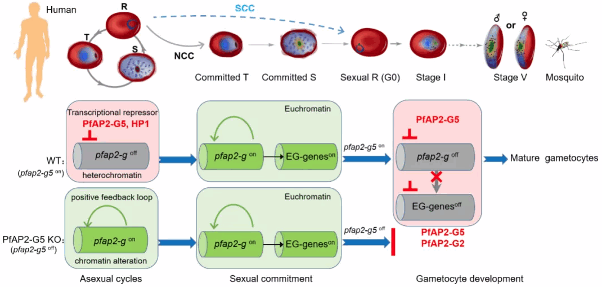

疟疾传播的核心调控因子
A cascade of transcriptional repression determines sexual commitment and development in Plasmodium falciparum

疟疾（malaria）是由疟原虫感染人体引起的、通过蚊媒传播的寄生虫病。世界卫生组织于2021年6月30日正式宣布我国消除疟疾，但目前全球仍有近90个国家有疟疾流行，每年2亿多人感染，导致约40万死亡，是全球最严重的公共卫生问题之一。而且，我国目前仍有大量的境外输入病例，如何防止输入再传播是巩固我国无疟状态的关键。疟原虫的生活史需要经历人和按蚊两个宿主，只有成熟的配子体才能通过按蚊传播。因此，疟原虫的配子生殖（gametocytogenesis）过程，即在人体内红细胞寄生阶段的无性体（asexual forms）向配子体（gametocytes）的性转换和发育（sexual commitment and development）是疟原虫感染按蚊的关键，也是疟疾传播的决定性环节。迄今为止，人们已经陆续发现了一些参与疟原虫配子生殖的重要调控因子如AP2-G, GDV1,等等（Kafsack et al. 2014. Nature; Poran et al. 2017. Nature; Filarsky et al. 2018. Science），但是对于该过程的核心调控网络仍所知甚少。
2021年8月8日，同济大学医学院/附属东方医院张青锋团队联合生命科学院江赐忠团队及江苏省寄生虫病防治研究所曹俊团队在Nucleic Acids Research杂志在线发表了题为A cascade of transcriptional repression determines sexual commitment and development in Plasmodium falciparum 的研究性论著，首次揭示了恶性疟原虫配子生殖的多重表观遗传调控网络，发现了核心调控因子PfAP2-G5并阐明其作用机制，为疟疾传播阻断新措施的研发提供了关键靶点。
在本研究中，作者首先利用CRISPR-Cas9基因编辑技术对恶性疟原虫ApiAp2转录调控因子家族开展了系统的基因敲除和配子体生成能力的筛选。发现在恶性疟原虫的27个ApiAP2成员中，有6个与配子生殖有关。令人惊奇的是，其中一个成员PfAP2-G5的敲除虽然能显著促进疟原虫无性体向配子体的性转换，但是不能产生成熟的配子体，提示该蛋白在配子生殖的不同阶段具有双重调控作用。于是，作者利用染色质免疫共沉淀（ChIP-seq）和差异转录组（RNA-seq）分析，并结合基因突变和生化实验，在全基因组水平上鉴定了PfAP2-G5的靶基因及调控机制。结果表明：PfAP2-G5是一个转录抑制因子，能够通过直接结合靶基因的上游调控区域，例如疟原虫性转换关键基因pfap2-g，抑制靶基因启动子的转录活性；同时，该蛋白也是异染色质（Heterochromatin）结构的相关因子，能够参与靶基因位点处的局部异染色质形成，抑制靶基因的表达。因此，PfAP2-G5可以抑制pfap2-g等基因的表达，从而阻止疟原虫性转换的开启，在没有合适的传播机会时，继续滞留在人体内进行无性繁殖。
为进一步探索PfAP2-G5在配子生殖过程中的下游调控机制，作者首先利用配子体产生和成熟过程中的动态转录组分析和虫体发育过程（G0-GV）分析，揭示了该蛋白对于早期配子体（GI）的发育具有不可或缺的作用。染色质免疫共沉淀和差异转录组分析表明：在疟原虫性转换阶段，PfAP2-G能够上调PfAP2-G5以及其他靶基因，促进早期配子体G0的发育；但是，当疟原虫发育到GI阶段时，PfAP2-G5能够联合PfAP2-G2，迅速抑制PfAP2-G及其靶基因，而这些早期配子体发育相关基因的快速关闭是配子体成熟的关键。因此，这些ApiAP2蛋白组成的表观遗传调控网络决定了配子体的发生和发育成熟（见以下模式图）。
综上所述，PfAP2-G5介导的转录调控网络是疟原虫配子生殖过程的决定因素，决定着疟原虫生活史中两种生理状态的抉择：滞留在人体内进行无性循环繁殖，或进入性转换发育成配子体，从而感染按蚊继续传播。该蛋白的鉴定将为阻断疟疾阻断的新药或疫苗研制提供一个关键的靶点。
同济大学医学院博士研究生尚晓敏、生科院博士研究生沈仕君、江苏省寄生虫病防治研究所唐建霞副研究员为本文的共同第一作者。